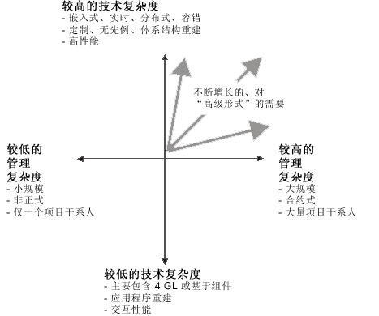

| 指南：流程判别式 |
 |
|
| 相关元素 |
|---|
概述软件开发流程受以下因素的影响：
这些因素的重要性并不是等同的。以下各节描述一些主要因素（最有可能影响开发流程的整体情况的因素），以及您如何在开发组织中实施流程和工具。 业务环境描述了开发软件的环境。有不同类型的业务环境影响着如何最佳地定制流程。 业务环境的示例有：
有许多中间情况；例如，只将软件开发的一部分进行转包的情况、地区分发作为附加因素的情况等等。不同项目干系人的总数是业务环境的良好指示器。 业务环境影响形式的级别、正式程度和流程的严格性。涉及的项目干系人（购买者、客户、转包商、监管机构等）越多，项目将越可能需要在主要的项目里程碑提供正式证据，例如文档、报告和原型。 软件开发工作的规模软件开发工作的规模是按某些度量值来定义的，例如代码行（SLOC）、交付的源代码说明或功能点、工月数或仅是成本。 工作的规模将影响形式的级别、正式程度和流程的严格性。项目越大，开发团队越大，而且，无论业务环境如何，各团队和管理人员在需求、接口和进度指示器方面所需要的正式性和可见度也越高。 大型项目中的沟通问题由于地理上分散的团队而进一步加重。 新颖度新颖度是基于相对于开发组织的此软件工作之前的工作，尤其是开发属于第二个周期还是在后来的周期。这包括组织的完善性及其流程、资产、当前技能集以及诸如召集和培训团队、获得工具和其他资源之类的问题。 项目的新颖度以完全不同的方式影响流程。新项目（该类第一个）会显著影响动态配置：先启和精化阶段将延长，可能跨好几个迭代。同时将更强调获取和捕获需求、用例建模、体系结构和降低风险。对于作为前一系统的演进周期的项目，变更管理更为重要，并且纳入遗留代码会引起一些技术难题。 新颖性不仅与正在开发的系统相关，还与执行方组织的完善性相关，因为引入新技术或工具会影响流程。尤其，将 Rational Unified Process（RUP）本身引入一个组织就必须分为几个谨慎的步骤来进行。一个组织将把一些惯性带给所采用的新流程，并且采用策略必须考虑从现有做法到新做法的平稳过渡。 应用程序类型有不同类型的应用程序，例如嵌入式实时系统、分发式信息系统、电信系统、计算机辅助软件工程（CASE）工具等。应用程序的类型将影响流程，尤其在域可能对开发强加的特定限制方面，例如安全性、性能、国际化、内存限制等。 如果应用程序很关键，应用程序的类型则会影响流程；例如机场中的航班控制系统。关键的系统一般需要有较高级别的形式，既是为了跟踪需求，也是为了确保产品质量。关键应用程序还要求在测试上使用更多资源。 开发的类型或目标领域会给流程带来如下问题：
开发类型有各种开发，例如：
当前开发流程在多数情况下，您将不替换组织中当前实施的软件开发流程，因为在多数情况下您将逐步实施新的开发流程，首先侧重于更为关键和重要的区域。有些当前的软件开发流程甚至可能继续存在一段时间，也可能永远存在下去。 问题和根本原因为项目确定的问题和划分的问题优先级会影响流程实施开始时流程中您将重点处理的那些区域。重要的是要注意，如果组织中没有确定的工作方式，发现问题可能是毫无意义的。请参阅概念：在项目中实施流程。相反，您可能需要确定这些问题的根本原因。要消除这些问题，您将通过改进流程、引入工具以使流程自动化和培训人员来处理这些根本原因。 常见问题的示例以下是一些常见问题的示例：
根本原因的示例问题通常是犯了错误的症状。您需要确定问题的根本原因。以下是一些常见根本原因的示例：
组织因素要在一个组织中实施该流程，这取决于一些组织因素，例如组织变更能力、组织结构、项目组织和管理中的文化、所具备的才能和技能、先前的经验和当前的态度。 组织因素还影响流程的配置方式。例如，如果组织中的人员先前一直在使用某一软件开发流程描述，那么开始使用 RUP 就比较容易。 另一方面，如果这些人没有使用过软件开发流程描述，则您可能要决定限制流程描述的范围。您也可以通过额外的努力来使流程描述易于理解和使用，确保它包括（引用）了将提供最大价值的信息。 如果有些区域对许多人来说是新的，则制定尽可能好的指南将使过渡容易一些。例如，如果编程语言对于许多人来说是新的，则您将希望有非常好的编程指南和设计指南来辅助他们的学习。 态度组织员工中针对改用新技术、新流程或新工具的消极态度可能是成功实施流程和工具的最大威胁。对流程过于热情也可能是个问题，因为它会使人们过度关注流程。 要评估人们对新技术、流程和工具的态度，则询问如下问题：
要评估人们的动机，则找出如下问题的答案：
表示消极态度的可能包括如下说法：
一些处理消极态度的方式有：
表示过度热情的包括：
一些处理过度热情的方式有：
技术与管理复杂性不同类型的系统和它们的项目可以按系统的技术复杂性和管理复杂性来分类。 下图说明了一个不同系统可如何分类的概念。例如，典型的小业务电子表格应用程序通常技术复杂性较低并易于管理。另一个极端是典型的武器系统项目，通常在技术上很复杂，而且管理起来也很复杂。 通常增加系统规模、项目工期或业务环境也会增加管理复杂性。 在问题域或解决方案空间方面增加新颖度会增加技术复杂性。管理复杂性和技术复杂性之间有一种交互 － 许多大型项目在技术上也很复杂。 这导致：

系统是按照技术复杂性和管理复杂性来分类的 |
© Copyright IBM Corp. 1987, 2006. All Rights Reserved. |